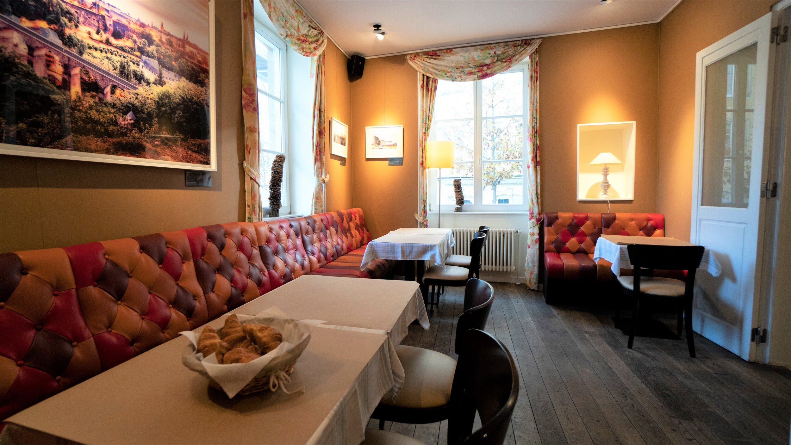
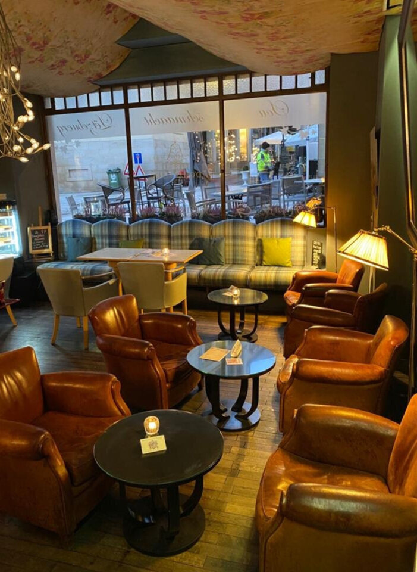
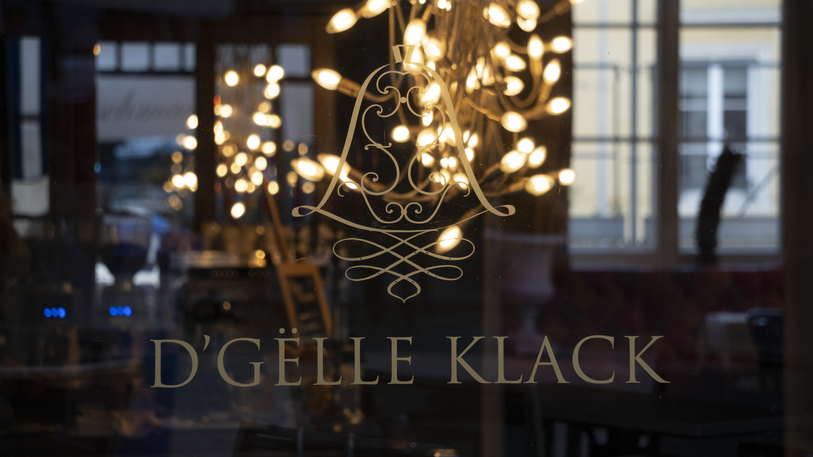

Cuisine du terroir luxembourgeois, au pied du Palais grand-ducal.
Signature proposée — à valider avec l'établissement.
Du café du matin au piano-bar de minuit, la Gëlle Klack sonne chaque heure de la Vieille Ville.
Petit-déjeuner, viennoiseries et cafés de spécialité, servis dès sept heures dans les banquettes de cuir.
Plat du jour et classiques régionaux — produits de saison, cuisine de terroir à midi pile.
L'après-midi tranquille : thés Kusmi, pâtisseries et un fauteuil club au calme.
Crémants et vins luxembourgeois, cocktails et planches — l'heure de l'after-work en Vieille Ville.
Dîner tardif et ambiance lounge feutrée, jusque tard le vendredi et le samedi.
Soirées piano, expositions d'artistes et dégustations — la carte des soirs à confirmer.
Une brasserie de saison signée par la cuisine de la maison : classiques luxembourgeois, poissons du jour et flammekuchen.
On s'attable dans la Vieille Ville, là où la ville a commencé, à quelques pas de la résidence du Grand-Duc.
Banquettes de cuir patiné, guirlandes chaudes derrière la vitrine gravée, expositions d'artistes aux murs : la Gëlle Klack est un salon de quartier autant qu'un restaurant. Aux beaux jours, la terrasse donne directement sur le Palais — l'une des plus belles vues de tables de la capitale.



Piano-bar, art aux murs et verres de Moselle.
« Un salon de la Vieille Ville où l'on reste du café du matin jusqu'au dernier accord du piano. »
— L'esprit de la maison
Réservation par téléphone — la table en terrasse part vite aux beaux jours.